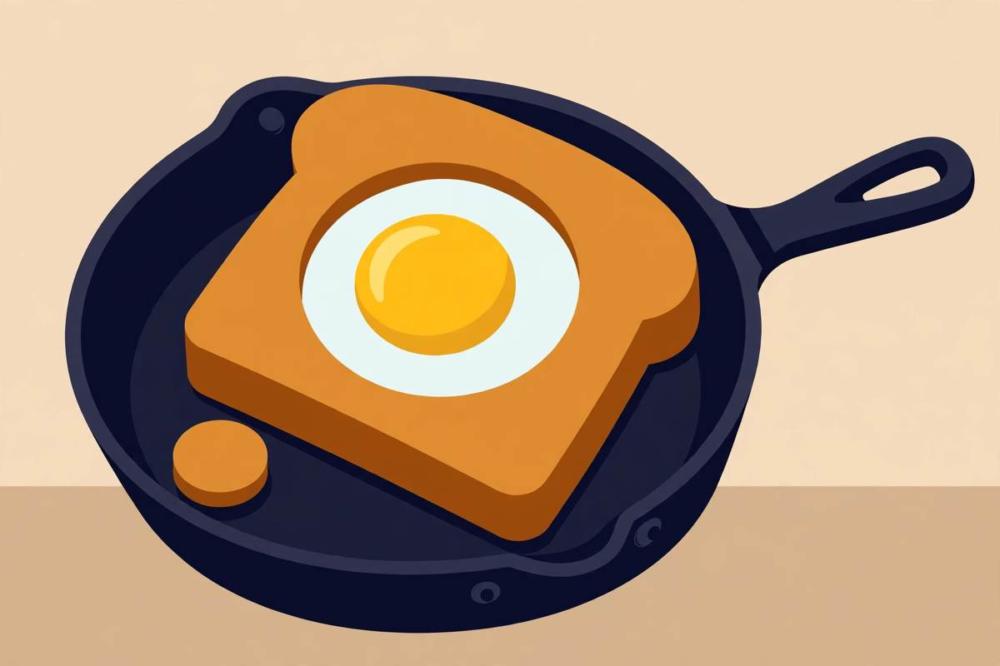

Egg in a Hole Toast: Names, Hole Size, and Yolk Control

The most common mistake with this dish happens before the pan is warm. It gets called toad in the hole, and toad in the hole is a different dish entirely. The British original is sausages baked in Yorkshire pudding batter, served in gravy, and its earliest versions in the 18th century used scraps of beef, mutton, or kidneys rather than sausages at all. The egg toast and the sausage bake bear no historical relationship, on the documented record, and the British dish came first. In the United States, toad in the hole became widespread diner slang for the egg fried in toast, which is how the confusion became permanent. This study uses the plain name, egg in a hole, and treats the rest as aliases on file: egg in a basket, bird in a nest, one eyed jack, egg with hat, egg in a frame, and gasthaus eggs. One dish, many names, three recurring failures. The failures are the subject here, in the order a cook meets them.
The dish in one line: an egg fried inside a hole cut in a slice of buttered toast, with the cut out round toasted alongside. Difficulty, low. Yield, 1 egg and 1 slice per serving.
Failure one: the white escapes under the bread
The white runs under the slice, pools in the pan, and leaves the hole half empty. The documented cause is specific: the slice is too thin, or the hole is too wide. The published hole sizes explain why cooks keep meeting this failure, because they do not agree. One leading recipe cuts about a 5 cm (2 inch) hole. Another cuts 3.8 to 5 cm (1.5 to 2 inches). An air fryer version recommends about 6.4 cm (about 2.5 inches) for a standard thick slice. A fourth specifies a 5 to 7.6 cm (2 to 3 inch) cutter and then cuts a hole of about 5 cm (2 inches).
The verification is plain geometry against the egg. Too small a hole overflows, because the white has nowhere to spread. Too big a hole spreads the egg thin, and a thin white finds every gap under the bread. The specification that satisfies both warnings, and appears in two independent records, is a hole of about 5 cm (2 inches) in a slice at least 2 cm (about 3/4 inch) thick. One documented method states that thickness and a hole of about 6 cm (about 2.4 inches) together as its leakage ruling. This study adopts the narrower hole with the same thickness floor, because the 5 cm (2 inch) hole is the size two records converge on and the thinner spread is the failure being fixed. Thick, sturdy bread is the other half of the fix. White sandwich bread and sourdough are the documented recommendations, on the ground that they crisp well and hold the egg.
Failure two: the toast scorches before the white sets
Bread browns faster than an egg white sets. A cook who drops cold bread and a raw egg into a hot pan at the same moment is running two clocks with one heat, and the bread clock wins. The documented fix is to separate the clocks. Pre toast the bread first, on medium heat, for 30 to 60 seconds per side until lightly golden, and only then add the egg. The toast enters the egg stage already partway done, so the finish can run lower and slower.
Heat discipline is the second half. The fully set yolk method in the same record finishes on medium low specifically to avoid scorching. Butter belongs on the bread, where it browns the crumb, rather than pooled in the pan where it browns alone. If the edges are darkening while the white is still translucent at the top, the pan was too hot at the egg stage. Lower the heat and use the lid. That is the next failure, and its fix.
Failure three: the yolk cooks past the order
A runny yolk and a set white are two different donenesses in one small circle, and the finish a cook chooses decides whether both arrive. Three finishes are on the documented record, and they are not interchangeable.
| Finish | Documented method | Documented timing | Control it gives |
|---|---|---|---|
| Lid, no flip | Crack the egg into the pre toasted hole, cover the pan to set the whites, serve without flipping for runny, or flip briefly at the end | Runny, cover 30 to 45 seconds; jammy, cover 60 to 75 seconds; fully set, cover 90 seconds | Timed control without disturbing the yolk; the order is set by seconds under the lid |
| Flip | Crack the egg into the hole, let it set a bit on the bottom, flip once with a spatula, finish on the second side | Set on the bottom 30 to 45 seconds, about a minute in total before the flip in the Drummond record; a second record cooks 3 minutes, flips, cooks 3 minutes, flips again for 30 to 40 seconds for over easy | Direct sight of both sides; the risk is a broken yolk at the flip |
| Oven | Toast the bread in an ovenproof skillet, flip it, add the egg, transfer the whole skillet to a hot oven without flipping again | Bake at 245°C (475°F) for 6 to 8 minutes until the white sets and the yolk stays runny; begin checking at 4 minutes for a really runny yolk | Hands off and even; the risk is overshooting unseen, which the 4 minute check exists to prevent |
Two further methods are on file. The air fryer version runs at 190°C (375°F) for 5 to 7 minutes. The sheet pan version runs at 200°C (400°F) until the whites set, reading the yolk by its jiggle, with an optional 30 to 60 second broil for crisper edges. Neither is the base procedure here. They are batch tools.
The safety boundary applies to the runny end of this table, and it is stated once, plainly. Health Canada guidance is that eggs and egg based foods should be cooked to an internal temperature of at least 74°C (165°F), and that lightly cooked eggs are especially risky for young children, the elderly, pregnant women, and people with weakened immune systems, for whom eggs should be cooked until the yolk is firm. A runny yolk is a choice for healthy adults. For anyone in those groups, order the fully set finish, cover 90 seconds and beyond, until the yolk is firm throughout.
The base procedure, skillet, lid finish
- 1 thick slice of bread, at least 2 cm (about 3/4 inch) thick, white sandwich or sourdough
- 1 large egg
- Butter, for the bread
- Salt and pepper
- Cut the hole. Press a hole of about 5 cm (2 inches) in the centre of the slice with a biscuit cutter or the rim of a glass. Keep the round. It toasts alongside and is served with the dish.
- Butter the bread and pre toast it. Set a skillet over medium heat, lay in the slice and the round, and toast 30 to 60 seconds per side until lightly golden. The cue is colour, pale gold, not brown. Browning finishes later.
- Crack the egg into the hole. Crack it close to the pan so it lands centred. Season with salt and pepper. If white escapes under an edge, lift that edge for a second and let the white seal against the hot pan, then settle the bread back down.
- Cover and time it to the order. Put the lid on. For a runny yolk, 30 to 45 seconds. For jammy, 60 to 75 seconds. For fully set, 90 seconds, then finish on medium low until the yolk is firm. The cue under the lid is a white that has turned opaque across the top while the yolk still looks glossy.
- Serve at once, with the round. The round is the documented dipping tool for the yolk. Best fresh is the standing instruction for this dish. If a serving must be held, refrigerate it and re crisp it in a skillet for 2 to 3 minutes per side. The microwave is ruled out in the record, because it toughens the yolk and softens the crust.
What success looks like: golden brown toast, a white that is set and still white rather than browned, and a yolk that is soft, glossy, and unbroken. That three part check is the documented standard for the flip method, and it grades the lid method just as fairly. A documented variation, for the file: a slice of melty cheese and a second slice of bread turn the dish into a grilled cheese version, grilled 1 to 2 minutes per side until the cheese melts. It is a variation, not the base dish, and it ends the runny yolk question by answering it with cheese.
The ruling: which finish for which yolk
For a runny yolk and one serving, the lid finish, because its control is measured in seconds and the yolk is never turned. For a cook who wants both sides visible, the flip finish, with a wide spatula. For several servings at once, the oven finish, with the 4 minute check treated as part of the method. Govern the hole, the thickness, the pre toast, and the timing, and the dish holds.
— June Callahan, Food Writer